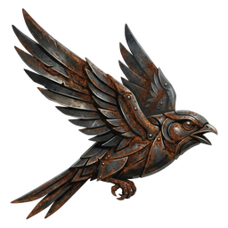
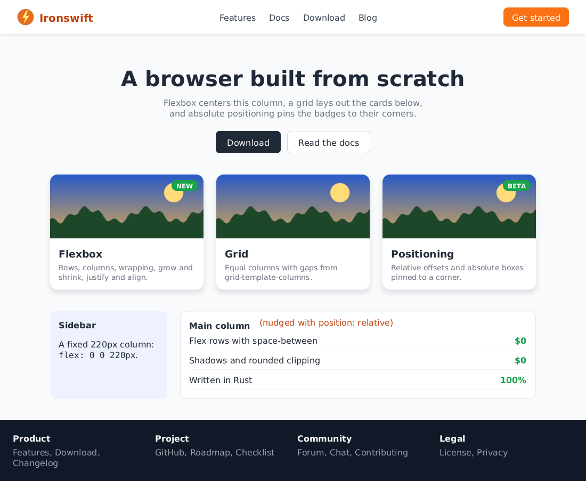

Its own engine
An HTML parser that passes all 1,972 of the standard's tree-building tests, a CSS engine, and layout for flexbox, grid, floats, tables and columns.

IronswiftFree · open source · MIT
Ironswift reads, lays out and draws web pages with its own engine, written from the ground up in Rust. It's built to be light enough for a 4 GB laptop, and private by default: no telemetry, no ads following you around.
Early preview for Linux · Windows and macOS later
Not a skin over Chrome or Firefox. Every layer is Ironswift's own, except the JavaScript engine, which is Boa.
An HTML parser that passes all 1,972 of the standard's tree-building tests, a CSS engine, and layout for flexbox, grid, floats, tables and columns.
No telemetry. Ad and tracker blocking with EasyList, third-party cookies off, HTTPS first, Global Privacy Control, and private windows that keep nothing.
Same-origin rules enforced by the browser, Content Security Policy, a system-call filter, and a separate sandboxed process for pages from other sites.
The Boa engine runs React, Vue and jQuery pages, with fetch, IndexedDB, Shadow DOM and web storage built in.
Fonts load only when used, background tabs sleep, and the GPU draws the page in tiles so scrolling stays smooth on modest hardware.
MIT licensed and built in the open, with the standard web-platform tests run against every change.

For 64-bit Linux. Pick the package that suits your system; each installs the same browser.
Looking for the latest release…
Adds Ironswift to your menu and your system's list of browsers.
sudo apt install ./ironswift_*_amd64.deb
One file, nothing to install. Carries its own fonts.
chmod +x Ironswift-*.AppImage ./Ironswift-*.AppImage
Runs in Flatpak's sandbox and updates with your other Flatpak apps.
flatpak install --user Ironswift-*.flatpak
Installs into ~/.local and keeps itself up to date.
tar xf ironswift-*-linux-x86_64.tar.gz sh ironswift-*/install.sh
Every release lists SHA-256 checksums. Or build it yourself: cargo build --release in a clone of the repository.
Ironswift is an early preview. It's good for trying out and following along, but don't make it your everyday browser yet: running each site in its own sandboxed process is still to come.